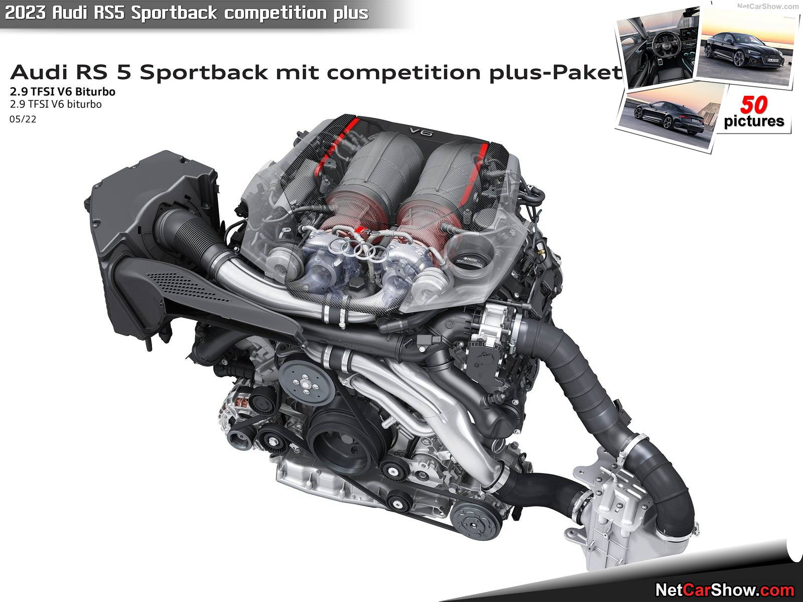

Audi RS 5
Az Audi RS 5 Sportback több mint pusztán sportos autó - élvezze egyaránt
prémiumszínvonalon a kezelést, a kényelmet és a dinamikát! Markáns RS-dizájnelemek ígérnek
csúcsszínvonalú sportosságot, amit Ön a nagyerejű, 2,9 literes V6-os biturbo motorral és a quattro
összkerékhajtással egyéni stílusban élhet meg az úton.

Áttekintés-Külső
Tekintsen bármilyen irányból rá, az Audi RS 5 Sportback¹ egyedi sportos karaktere már az első
pillantásra mély benyomást kelt. Markáns elölnézetét szegély nélkül integrált, széles és alacsony
Singleframe hűtőrácsa, új háromdimenziós méhsejt-optikájú rácsozattal fedett, masszív légbeömlő
nyílásai, valamint "quattro" feliratú első légterelője határozza meg. Hátulja egyszerre kelt robusztus
és dinamikus hatást, amiről egyebek mellett RS-specifikus diffúzorbetét, az önálló elemként kialakított
légterelő perem, illetve az RS-kipufogórendszer ovális végcsövei gondoskodnak. Kívánságra 20 col
peremátmérőjű, bronzárnyalatú könnyűfém keréktárcsák hangsúlyozzák a sportos fellépést.
Az Audi RS 5 Sportback "vezérlőközpontja" is színtiszta sportosságot sugároz, például a
méhsejt-mintázatú steppeléssel és crescendo-vörös kontrasztárnyalatú díszvarrásokkal, illetve igény
szerint tangóvörös ülés-oldalbetétekkel készült, extrafelszerelésként rendelhető vörös Feinnappa bőr
RS-dizájncsomag révén. A határozott oldaltartás és a kiváló üléskényelem itt a hosszú utakon is
biztosított. Az RS-menüket kínáló, RS-specifikus Audi virtual cockpit műszeregység és az MMI Touch
érintőképernyő fontos járműinformációkkal szolgál.
Áttekintés-Belső
Az Audi RS 5 Sportback olyan vonóerőt produkál, ami mindent gyorsan "lekicsinyít" a visszapillantó
tükörben. E magával ragadó erőt a 2,9 literes V6-os TFSI-biturbo-motor (üzemanyag-fogyasztás, kombinált:
9,2 l/100 km; szén-dioxid-kibocsátás, kombinált: 209 g/km) produkálja a motorházfedél alatt, s 331 kW
(450 LE) teljesítményének és 600 newtonméter forgatónyomatékának köszönhetően az RS 5 Sportback álló
helyzetből mindössze 3,9 másodperc alatt gyorsít fel 100 kilométer/órás tempóra. Az alapkivitelben 250
kilométer/órára leszabályozott végsebessége opcióként 280 kilométer/óráig is emelhető. Jól hangzik, nem?
S még jobban az extrafelszerelésként rendelhető sportkipufogó-rendszerrel!
Szállított már vérbeli sportautóban kerékpárt? Esetleg sílécet vagy snowboardot? Az Audi RS 5 Sportback¹
erre is lehetőséget kínál, mégpedig nagyméretű csomagtérajtajának, teljes egészében vagy részben
lehajtható hátsó ülésének és sík csomagtér-padlózatának köszönhetően - igazán meggyőző, magas használati
értékű karosszériakoncepció a munka, a család és a szabadidő szolgálatában.